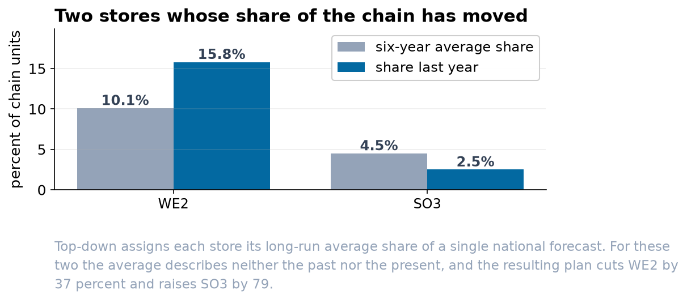

Hierarchical Reconciliation for a Sixteen-Store Chain
Base forecasts at three levels of an exact hierarchy, four coherent alternatives, and a five-origin rolling backtest scored by level and by series.
Abstract
Objective. To produce a coherent twelve-month plan at store, region and chain level for a sixteen-store retail chain, and to establish empirically which reconciliation approach to adopt.
Design. The hierarchy is exact and comprises 21 series: 16 stores, 4 regions and one chain total. Base forecasts were produced independently for all 21 by additive Holt-Winters with a 12-period season. Four coherent alternatives were formed: bottom-up, top-down by average historical proportions, OLS reconciliation, and MinT with a covariance estimate shrunk toward its diagonal. Evaluation used a rolling origin with five origins spaced six months apart and a 12-month horizon at each, scored by MASE against the in-sample seasonal naive error of the corresponding series.
Result. Independent base forecasts were incoherent by 10,924 units, 0.85 percent of the chain total. Bottom-up gave the lowest MASE at all three levels (0.747 chain, 0.782 region, 0.792 store). MinT was within 0.055 at the chain and within 0.005 at store level, and dominated OLS at every level. Top-down exceeded 1.0 at store level (1.198), that is, it was outperformed by a seasonal naive forecast.
1. Data and preprocessing
The planning extract contained 1,360 rows. A duplicated extract for August 2022 was removed, taking the frame to 1,344 rows, being 84 months for each of 16 stores. Region labels appeared in six spellings and were normalized to four. Three observations were not sales: a stocktake adjustment recorded as -412 units and two months in which the till export wrote a zero. All three were set to missing and interpolated within the store's own series. Left in place, each would depress the corresponding store's trend estimate and propagate into every aggregate containing it.
Aggregates are exact by construction. The maximum absolute discrepancy between the chain series and the sum of the four regional series across the 84 months is zero.
2. Base forecasts and the coherence deficit
Forecasting each of the 21 series independently from an origin at month 72 gives a chain total of 1,278,691 units for the following twelve months, against 1,273,167 from summing the four regional forecasts and 1,284,091 from summing the sixteen store forecasts.
| Aggregation | Twelve-month total | Against the direct chain forecast |
|---|---|---|
| Chain series, forecast directly | 1,278,691 | — |
| Sum of four regional forecasts | 1,273,167 | -0.43% |
| Sum of sixteen store forecasts | 1,284,091 | +0.42% |
The deficit is not evidence of misspecification at any level. It is the expected consequence of estimating 21 models under no cross-sectional constraint, and it does not diminish with a better base method.
3. Reconciliation
Writing the hierarchy as a summing matrix S of dimension 21 by 16, each coherent forecast takes the form S G y-hat for a mapping matrix G. Bottom-up sets G to select the bottom level. Top-down applies historical proportions to the top-level forecast. OLS reconciliation uses the ordinary least squares projection. MinT uses the generalized least squares projection weighted by the covariance of the base forecast errors, estimated here from in-sample one-step residuals and shrunk toward its diagonal with a shrinkage weight of 0.35, since 21 series over 72 months does not support an unregularized estimate.
| Method | Mean absolute adjustment to the base forecasts (units per series-month) |
|---|---|
| MinT | 93 |
| OLS reconciliation | 95 |
| Bottom-up | 103 |
| Top-down | 1,266 |
MinT achieves coherence with the smallest adjustment, which is the property the projection is constructed to have. Top-down moves the base forecasts by more than an order of magnitude more, because it discards 20 of the 21 fits and reconstructs them from proportions.
4. Backtest
| Level | Independent | Bottom-up | Top-down | OLS | MinT |
|---|---|---|---|---|---|
| Chain | 0.840 | 0.747 | 0.840 | 0.839 | 0.802 |
| Region | 0.799 | 0.782 | 0.999 | 0.796 | 0.788 |
| Store | 0.792 | 0.792 | 1.198 | 0.798 | 0.796 |
Bottom-up attains the minimum at all three levels. MinT dominates OLS at every level, which isolates the contribution of the error covariance, since the two methods are otherwise identical projections. Top-down is the only method exceeding 1.0 anywhere, and does so at the level with the most series.
Disaggregating the top-down result identifies where the loss is concentrated. The five worst series under top-down are WE2 at 4.3 times the bottom-up error, SO3 at 3.8, SO4 at 2.3, the West region at 1.5 and WE1 at 1.4. Every one is a series whose share of its parent has been trending.

5. Interpretation, and the limits of the result
The superiority of bottom-up here is a property of this hierarchy rather than a general finding. Differencing the seasonal period from each series, the standard deviation of the year-on-year change is 17.6 percent at store level, 9.5 percent at region and 5.6 percent at chain, against 4.4 percent that 16 mutually independent stores would imply. The proximity of 5.6 to 4.4 indicates that store-level errors are largely idiosyncratic and therefore diversify on aggregation, which is the condition under which bottom-up performs well. A hierarchy with stronger common shocks, more series or a shorter history would not be expected to reproduce this ranking.
Coherence and accuracy are distinct properties. All four methods evaluated in section 4 are coherent, including the one that is outperformed by a seasonal naive forecast at store level.
Three limitations bear on the deployment of this result. The hierarchy is single and static, so a chain with cross-cutting groupings such as channel or category requires reconciliation across multiple hierarchies simultaneously, which is not addressed here. No prediction intervals are produced; the interval of a reconciled forecast is not that of its base forecasts, and its coverage requires separate empirical assessment. And the ranking established here should be re-estimated whenever the store portfolio changes materially, since it depends on the diversification property quantified above rather than on any structural feature of the method.